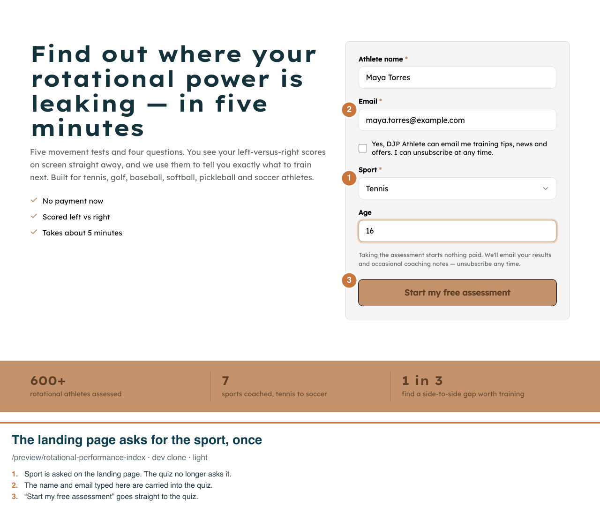
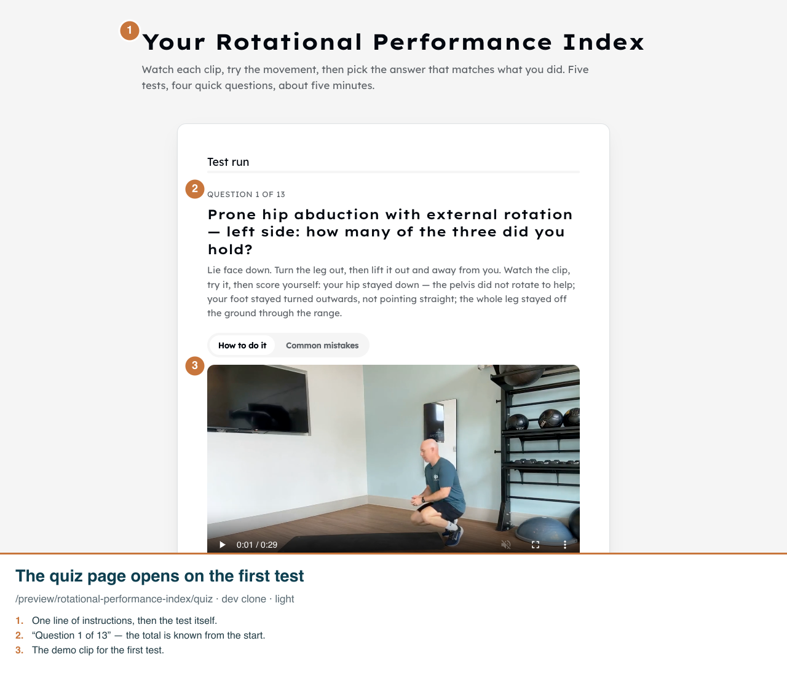
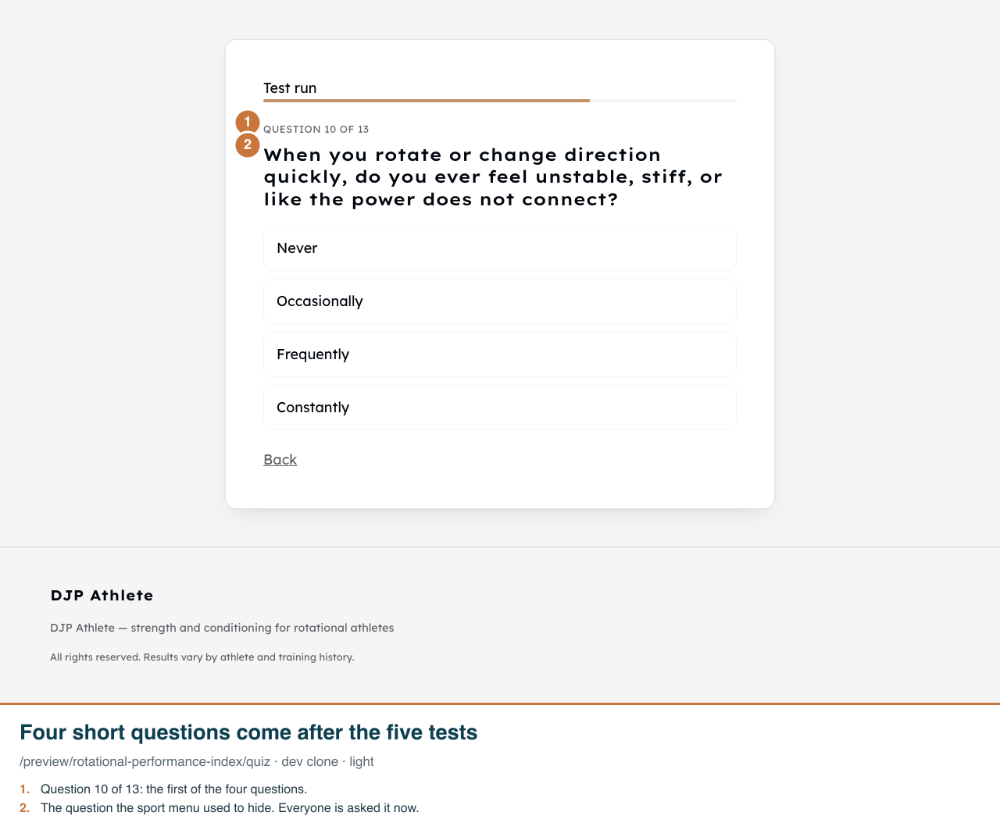
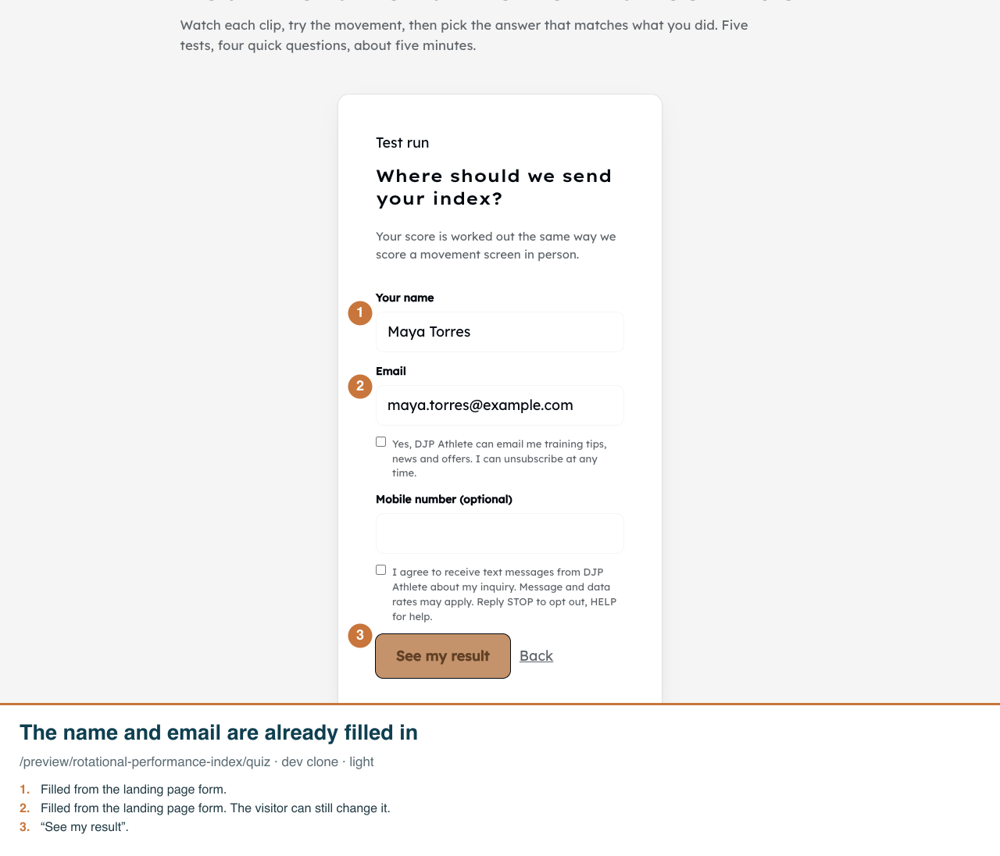
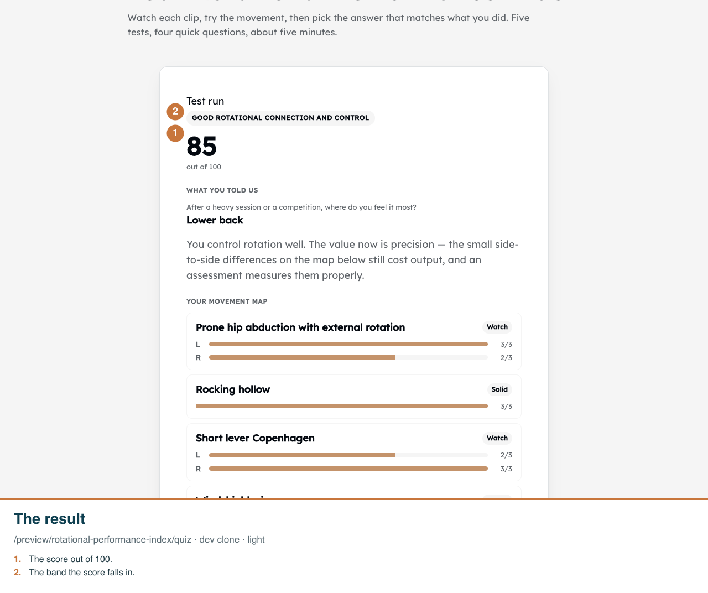
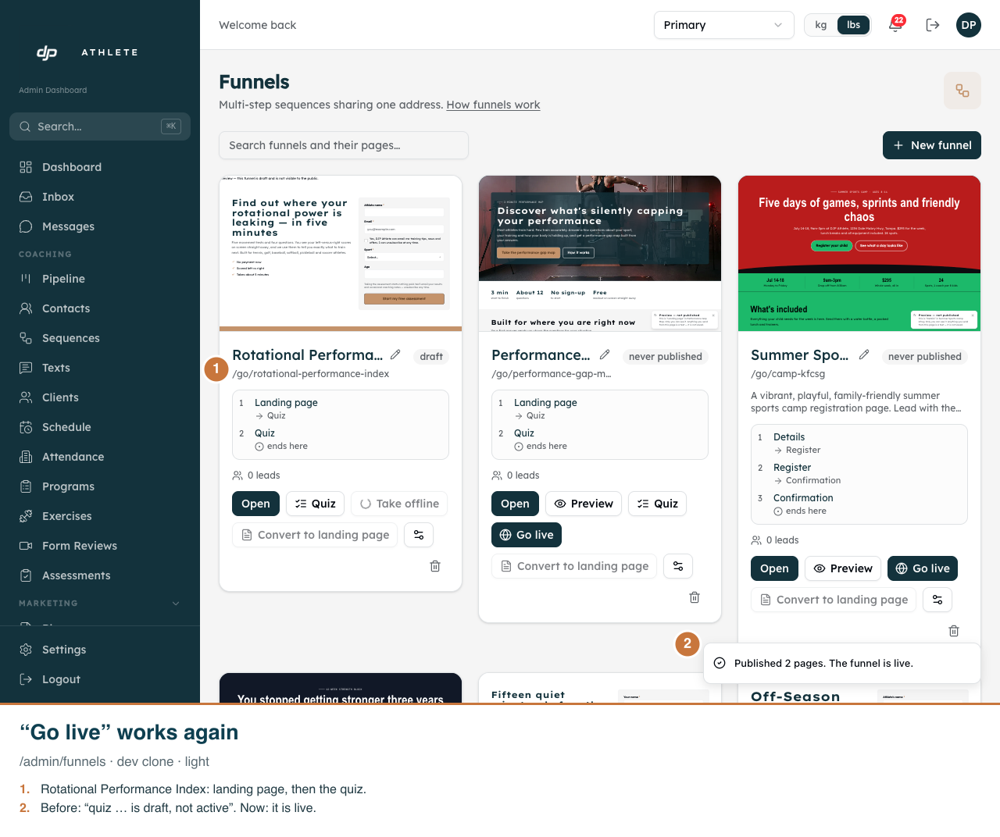

Rotational Performance Index funnel, after the 2026-10-06 cleanup
Real app on the dev clone, which holds the same pages and quiz as production now does. Shots 1-5 and 7 are a /preview/rotational-performance-index test run (nothing saved). Desktop 1280 wide; phone 390 wide at 2x. Funnel pages and the admin have no dark mode.
1. The visitor fills in the landing page form. The sport is asked here and nowhere else.

2. Pressing the button lands on the first movement test. There is no second sales page and no Start screen.

3. After the nine test screens (five tests, four of them done on each side), four short questions follow.

4. At the end, the visitor does not type their name and email again. They press the button.

5. The score and the movement map show straight away. This was a test run, so nothing was saved.

6. On the funnels board, “Go live” now puts the funnel live instead of refusing because the quiz was offline.

7. On a phone, the page opens on the first test. Its clip is a short scroll down.